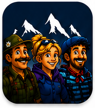

Tri pogledi, ena prava odločitev
Jože pozna teren, Maria zaupa internetu, Pierre navigaciji. TRI-GLAV želi te tri poglede povezati v bolj zanesljivo planinsko izkušnjo.
Projekt v razvoju
TRI-GLAV
TRI-GLAV raziskuje, kako bi lahko pametni gorski navigator povezal offline zasnovo, lokalno znanje, opozorila in jasnejši dostop do nujnih informacij.

Zgodba TRI-GLAV
V gorah ne šteje najhitrejši zaslon, ampak zanesljiva odločitev. TRI-GLAV raziskuje, kako povezati izkušnje domačinov, aktualne razmere in orodja, ki bi delovala tudi brez mobilnega signala.

Jože pozna teren, Maria zaupa internetu, Pierre navigaciji. TRI-GLAV želi te tri poglede povezati v bolj zanesljivo planinsko izkušnjo.
Razvojni cilj so offline poti, opozorila in lokalno znanje za trenutke, ko je v gorah najmanj prostora za napačen korak.
Vizija TRI-GLAV ni le zemljevid, temveč premišljen sopotnik za vreme, nevarnosti, skupnost in varnejše odločitve.
Zakaj TRI-GLAV
TRI-GLAV izhaja iz preprostega vprašanja: kako združiti smer, razmere, teren in pomoč v jasnejšo odločitev?
Produktna vizija
To so razvojni cilji, ne obljuba že končanega izdelka. Prioritete bomo preverjali skupaj s planinci, društvi in pilotnimi partnerji.
Cilj: ključne poti in priprava naj ostanejo dosegljive tudi brez podatkovne povezave.
Cilj: povezati opozorila z razmerami na izbrani poti, ne le s splošno napovedjo.
Cilj: jasno izpostaviti plazove, poškodovane odseke, požare in druga opozorila pred odhodom.
Cilj: skrajšati pot do nujnih informacij in jasno pokazati, kaj storiti v ključnem trenutku.
Cilj: preveriti varen način deljenja aktualnih opažanj ljudi, ki so na poti danes.
Cilj: vključiti preverjeno domače znanje, ki dopolni digitalne podatke in presojo na terenu.
Pomembno varnostno obvestilo
TRI-GLAV je projekt v razvoju, trenutno ni povezan s sistemom 112 in ne nadomešča uradnih poti za nujno pomoč. Načrtovane varnostne funkcije bodo predstavljene kot delovni cilji, dokler ne bodo tehnično in terensko preverjene.
Razvojni status in pilot
TRI-GLAV je trenutno koncept z razvito vizualno smerjo in uporabniško zgodbo. Naslednji dokaz ni trgovina z aplikacijami, ampak ozek prototip, preizkušen z resničnimi uporabniki.


Kontakt
Projekt je v zgodnji fazi. Veseli bomo konkretnega pogovora o pilotu, produktnem sodelovanju ali dolgoročnem partnerstvu. Obrazec pripravi e-pošto v tvojem odjemalcu.
TRI-GLAV
Pomembno je, da se vsi varno vrnemo domov.